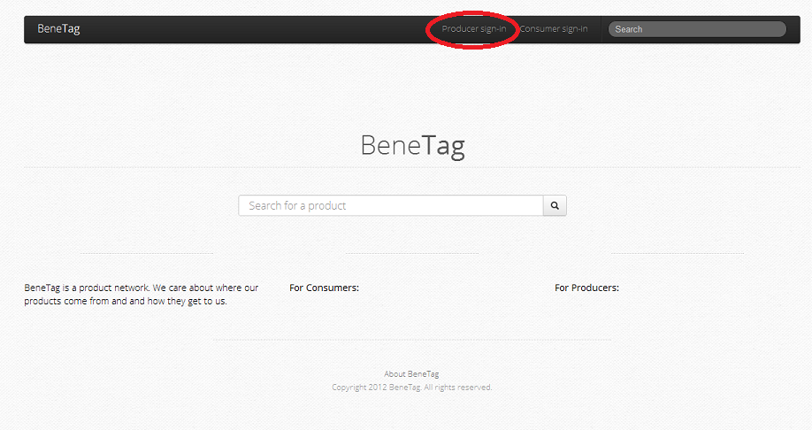
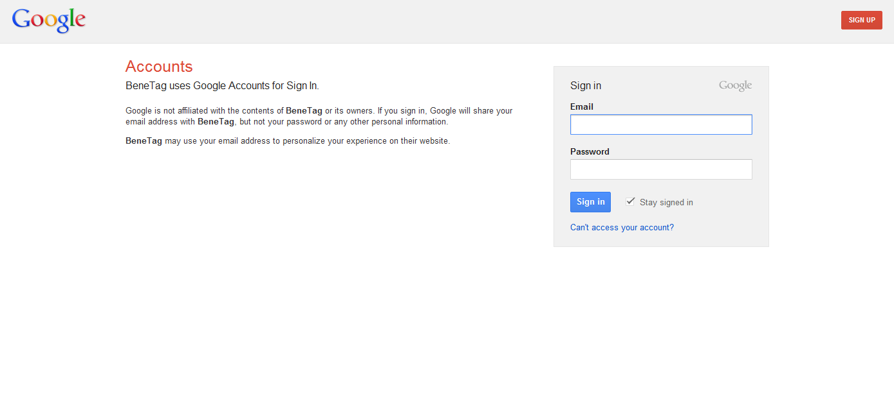
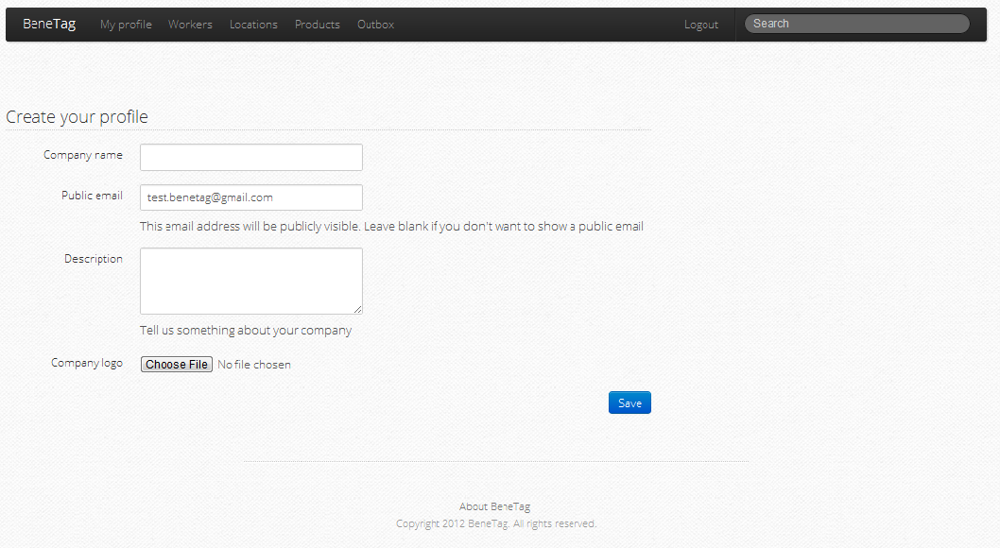
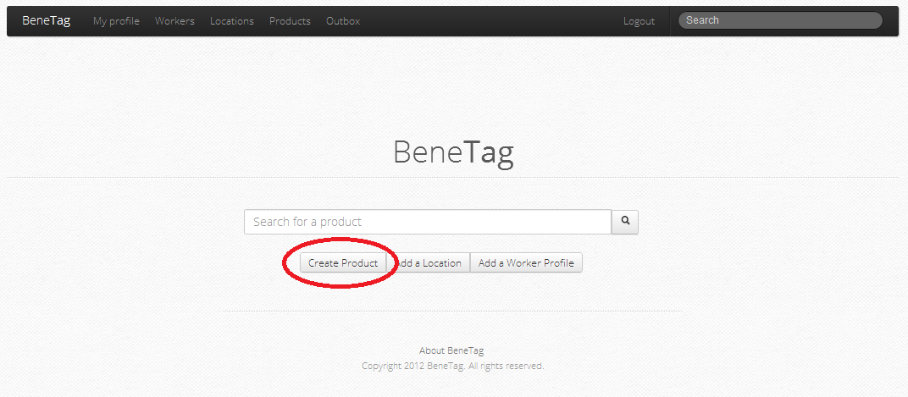
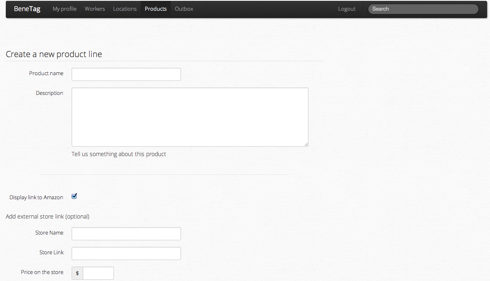
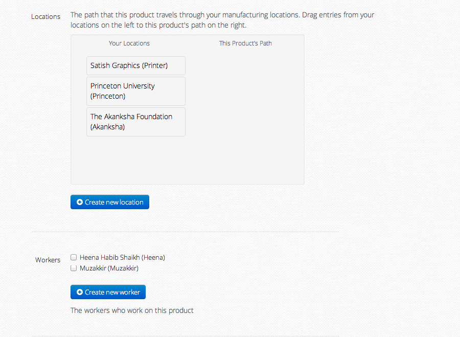
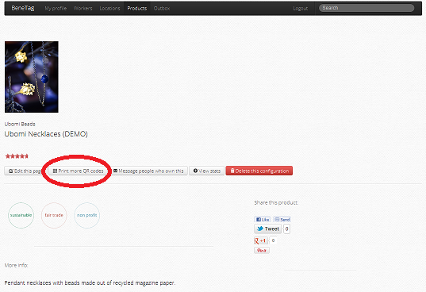
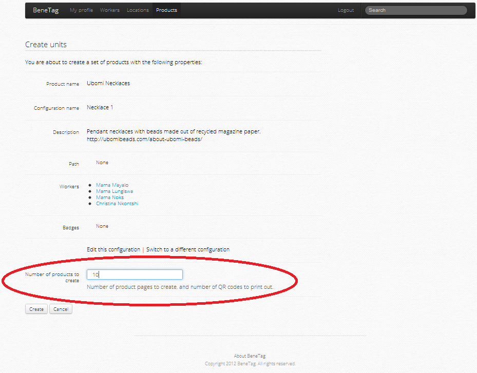
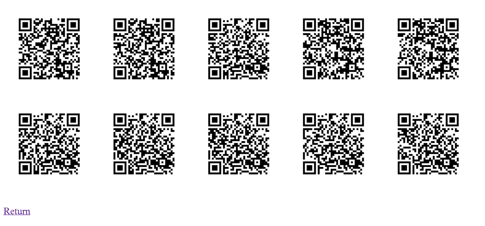
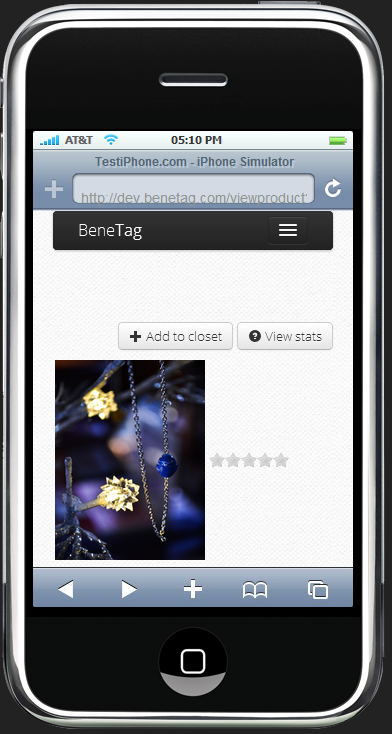

BeneTag
Get started with BeneTag today!
I’m a producer. How do I create a BeneTag page for my products?
I’m a socially conscious consumer. How do I use BeneTag to make ethically responsible purchases?
I’m a producer. How do I create a BeneTag page for my products?
Step 1: Register as a producer. (Your account will be verified by BeneTag within 3 business days). Alternatively, use the pre-verified account test.benetag@gmail.com (password: benetest).



Step 2: Add a product line.

- Tell us about your product. If your product is sold on Amazon, we'll link to it automatically. Alternatively, you can also link to your own online store front.

- Tell us about where your product was made. Add locations, and then drag the locations into a product path. The product path traces the path from where a product originates to where it is eventually purchased.

- Tell us about the people who made the product. Each worker you add will be saved in a general worker pool, so that you can reuse worker profiles for future product lines.
Congratulations! Your product page is now complete. You can come back and edit it at any time.
- Now we can print out QR codes and attach them to actual products. Each QR code will uniquely link an individual product unit within a product line to the product page.



- Once consumers add your products to their closet, we can send them messages to update them on the product.
- For different batches of the same product, we can also create additional product configurations. New configurations will inherit the product description and picture, but may contain new locations and workers.
I’m a socially conscious consumer. How do I use BeneTag to make ethically responsible purchases?
Step 1: Scan a QR code at the store or search for a product that you’re interested in buying.
If you don't have a QR code reader, you should be able to download one for free on the App Store/Play Store.
Step 2: Follow the URL to the product page

The product page contains a lot of useful information, including where a product was made and who made it.
- Badges show you whether a product is fair trade, sustainable, or made by a non-profit organization!
- You can add a product to your closet so that you can easily come back to the page later.
- You can share your product with any of your social networks, so your friends can see what you bought!
- You can add reviews and ratings on a products page to let a producer know what you think.